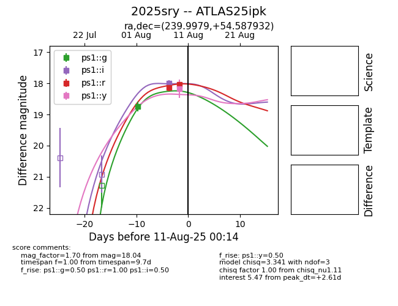

Target 2025sry at 2025-08-22 17:01, see:
FINK: fink-portal.org/ZTF25abigydq
Lasair: lasair-ztf.lsst.ac.uk/objects/ZTF25abigydq
ALeRCE: alerce.online/object/ZTF25abigydq
TNS: wis-tns.org/object/2025sry
YSE: ziggy.ucolick.org/yse/transient_detail/2025sry
alt names
ZTF25abigydq (ztf,alerce)
2025sry (tns,yse)
ATLAS25ipk (atlas)
PS25fzw (panstarrs)
coordinates:
equatorial (ra, dec) = (239.9979,+54.58791)
galactic (l, b) = (85.0326,+46.25530)
photometry
last atlaso=18.40, ps1::g=18.74, ps1::i=17.99, ps1::r=18.04, ps1::y=18.18, ztfg=19.13, ztfr=18.69
8 atlaso, 1 ps1::g, 1 ps1::i, 2 ps1::r, 1 ps1::y, 5 ztfg, 4 ztfr detections
